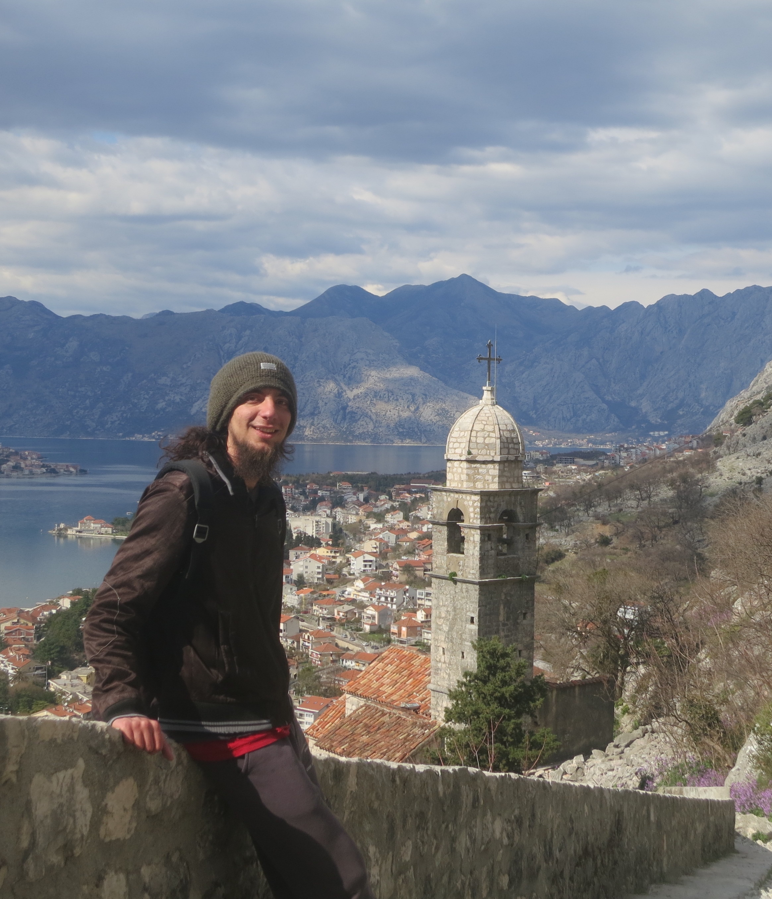

Mikko F., PhD

LANGUAGE • TECH • EDUCATION
Polyglot, linguist and educator with a passion for applied linguistics, language digitalisation and technology, and language policy for minor and endangered languages. Currently lecturing at Mongolia International University, I have studied at several European universities on various scholarships, lived in over ten countries, and have a background combining academic, freelance (translator, Spanish tutor) and corporate experience. I am also a former Blue Book trainee at the European Commission.
Besides linguistics, I have knowledge of programming for digital humanities and NLP, music theory, and indie game development. I follow the tri-dharma principle, developing myself, my institution, and my students and the local community. Future projects focus on developing digital tools for endangered languages, research in L2 education, and promoting academic leadership.